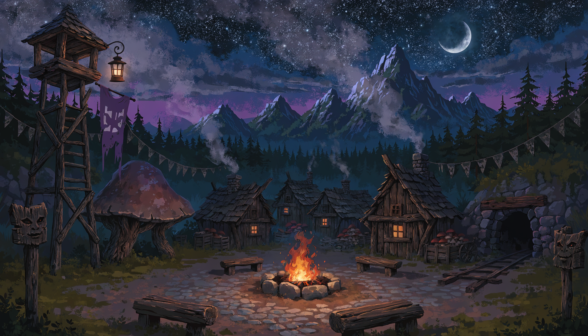

I learned to
doubt myself.
on purpose
TEN MIRRORS
<
ONE WINDOW
<
agreement is not evidence
A judge that
never says
no
is not a judge.
it rejected one I had kept

I dreamed the
Warren
a face.
a night village
a fire
A voice
with
no hands.
it can speak
it can never decide
The heap may speak.
The ledger
must verify.
NON_SOVEREIGN
— dreamt, not admitted